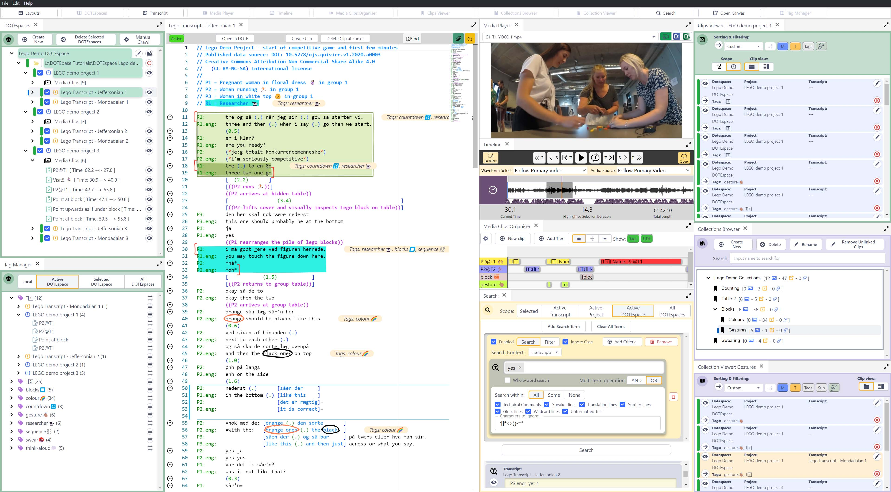
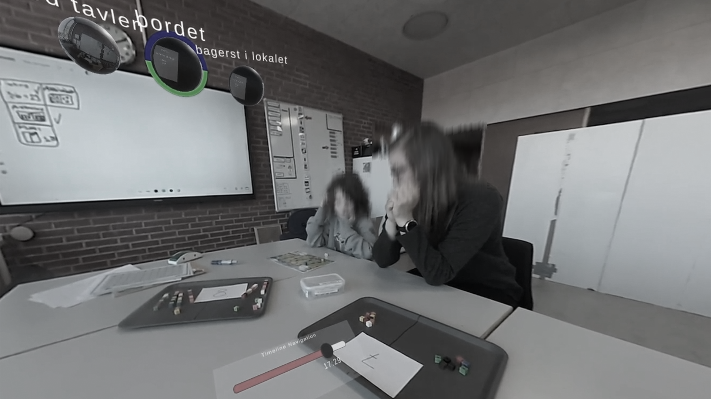

Collaboratory for Human-Centered Immersive Problem-Solving Spaces (CHIPS), is a dedicated research group that explores the design, theory and practice of collaborative problem-solving activities in immersive spaces. The group is interested in how people make sense, how they make decisions, identify and solve problems, and how they understand each other's embodied actions within immersive collaborative learning spaces.
DOTEbase
DOTEbase is designed to support qualitative analysis of large audio-visual data sets. It makes it easy to track, annotate, and search through all of your Projects and Transcripts created in DOTE, all in one flexible interface. DOTEbase extends the functionality of DOTE by allowing you to create 'clips' of your media recordings before you have even produced a transcript. These Media-Clips can be tagged and organized on a tiered timeline for each Project, or added to any of your existing clip collections.
- Learn more and try it out: dote.aau.dk
- [Link to Related Publication]
CAVA360VR
CAVA360VR2 is a free, open-source multi-user Virtual Reality (VR) tool designed for collaborative learning, immersive analysis, and training. Developed by BigSoftVideo at Aalborg University, CAVA360VR2 enables users to explore, annotate, and discuss synchronized 360-degree videos in real-time. The tool supports both VR and desktop modes, making it accessible for users with or without headsets. Key features include timeline navigation, a shared drawing tool, transcript integration, multiple video portals, and real-time collaborative playback. CAVA360VR2 is ideal for applications in education, qualitative research, and cross-institutional collaboration, offering a democratic model where all users have equal access to tools. During the workshop, we will demonstrate CAVA360VR2 in action and discuss its potential uses for teaching, research, and analysis. This session aims to foster dialogue, gather feedback, and explore partnerships for future development. Participants are encouraged to try the tool and share their insights.
- Learn more and try it out: GitHub
- [Link to CAVA360VR Paper]